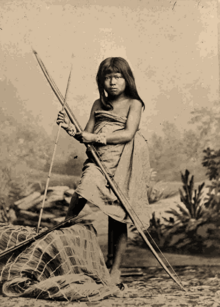

Los Payaguaes
Los payaguaes fueron un pueblo del Chaco Boreal en el Paraguay de la familia guaycurú que en épocas coloniales vivían a lo largo del río Paraguay desde el Gran Pantanal del Mato Grosso del Sur en Brasil y Bolivia hasta la provincia del Chaco en Argentina. El nombre "payaguá" no es el que ellos mismos se daban sino el que con cierto matiz peyorativo le dieron sus rivales y enemigos: los guaraníes.
El cronista de la expedición del adelantado Pedro de Mendoza, Ulrico Schmidl, describió al grupo de los agaces -payaguaes meridionales- que encontraron de viaje al Paraguay en 1536 en su obra Viaje al Río de la Plata, llamándolos aigeiss, aigas, aeiges, aygass, aygas y aygaysen:

De allí llegamos a una nación llamada Aigeiss, tienen pescado y carne; son altos y bien formados, uno y otro sexo; las mujeres son lindas, se pintan y se tapan las vergüenzas.
Eso que llegamos adonde ellos estaban, se presentaron de guerra dispuestos a pelearnos; y con esto creían no dejarnos pasar adelante; cuando esto vimos y que no había más remedio, nos encomendamos a Dios, el Todopoderoso, y nos preparamos en orden de batalla por agua y por tierra, los peleamos y acabamos a muchísimos de los Aigas, y ellos nos mataron 15 hombres. Dios los favorezca a todos. Estos Aeiges son buenos guerreros, los mejores que hay, si es por agua, pero por tierra no lo son tanto.
Con tiempo habían hecho huir a sus mujeres e hijos, del mismo modo habían ocultado la comida y cuanto tenían, así que no les pudimos quitar ni aprovechar nada. Mas cómo les fue al fin es lo que a su tiempo se dirá.
Su pueblo está cerca de un agua corriente que se llama Jepedy, se halla en la otra banda del Paraboe, nace de la sierra del Perú, de una ciudad llamada Duchkameyen. A los Aeiges de los dichos Kuremagbeis son 35 milla de camino (...) Después de esto tuvimos que dejar a estos Aygass y llegamos a una otra nación, llamada Caríes, están a 50 millas de camino de los Aygas (...) A estos carios desde los Aygaysen hay 30 millas...